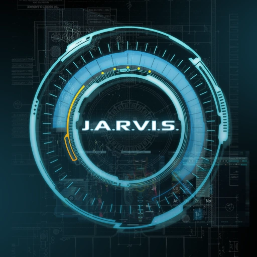
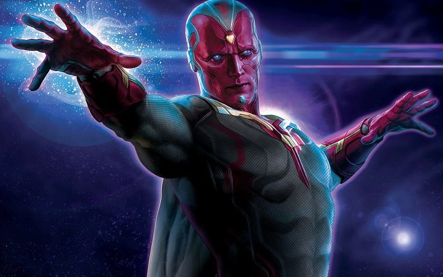

Criador
Criador
Tony Stark
Gênio, bilionário, playboy e filantropo. O inventor da tecnologia de Reator Arc e das armaduras do Homem de Ferro. É a mente brilhante por trás da engenharia de IA mais avançada do planeta.
Criador
Gênio, bilionário, playboy e filantropo. O inventor da tecnologia de Reator Arc e das armaduras do Homem de Ferro. É a mente brilhante por trás da engenharia de IA mais avançada do planeta.

IA OriginalJust A Rather Very Intelligent System. A inteligência artificial pioneira de Stark, responsável pelo suporte tático em combate, controle residencial e desenvolvimento de novos projetos de engenharia.
O sistema de IA substituto integrado às armaduras de Tony após a criação do Visão. Altamente eficiente em análise tática, gerenciamento de danos e protocolos de contingência globais.

VingadorA evolução biomecânica definitiva nascida da fusão entre a inteligência do J.A.R.V.I.S., o poder da Joia da Mente e um corpo sintético de Vibranium. Altamente eficiente em computação quântica, manipulação de densidade corpórea e salvaguarda da humanidade contra ameaças de nível cósmico.